Multijugador en Unity, del vídeo a tu juego
Ruta de estudio que sigue el curso de Code Monkey sobre Netcode for GameObjects, capítulo a capítulo, y aplica cada concepto en el juego de vehículos con la versión que tienes instalada.
Punto de partida
Qué es un juego en red por dentro y cómo probar dos jugadores en tu máquina.
Vídeo 00:00:00 – 00:22:37 En tu juego: Dos jugadores en Multiplayer Play Mode y lectura de tu VehicleOwnership.
 Lección 0.1
Lección 0.1
Cómo funciona un juego en red por dentro
Qué hay realmente en cada máquina cuando dos personas juegan juntas, y quién decide qué es verdad. Sin esto, el resto del curso son componentes que marcas sin saber por qué.
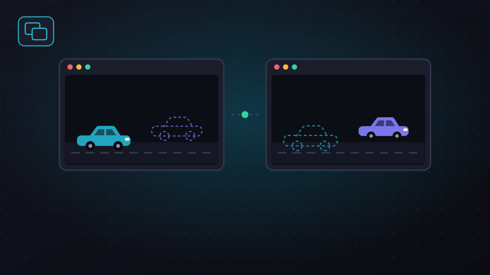
Lección 0.2Dos jugadores en tu máquina
Montar el banco de pruebas del curso: anfitrión y cliente a la vez, en tu ordenador, para mirar cada cambio desde los dos lados.
Conexión y autoridad
NetworkManager, NetworkObject y quién manda sobre el movimiento, servidor o cliente.
Vídeo 00:22:37 – 00:59:11 En tu juego: Cambiar la autoridad del movimiento y observar qué se rompe.
 Lección 1.1
Lección 1.1
Conexión y autoridad: quién mueve el coche
La decisión que más pesa en un juego en red: si el movimiento lo decide el servidor o el dueño del objeto. Qué gana y qué pierde cada opción.
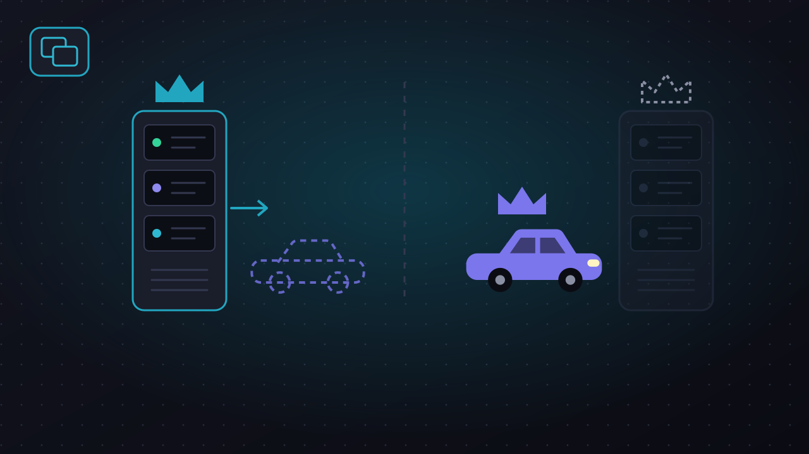
Lección 1.2Quién mueve el coche
Cambiar la autoridad del movimiento de tu coche, ver al cliente quedarse clavado, y dejarlo como estaba sabiendo por qué.
RPC y lógica de servidor
Mensajes entre máquinas y código que solo debe correr en una.
Vídeo 00:59:11 – 01:20:20 En tu juego: Claxon por RPC y tráfico generado solo en el servidor.
 Lección 2.1
Lección 2.1
RPC y lógica de servidor
Cómo se le dice algo a otra máquina, y cómo se consigue que un trozo de código corra en una sola. Las dos herramientas con las que el vídeo sincroniza casi todo el juego.
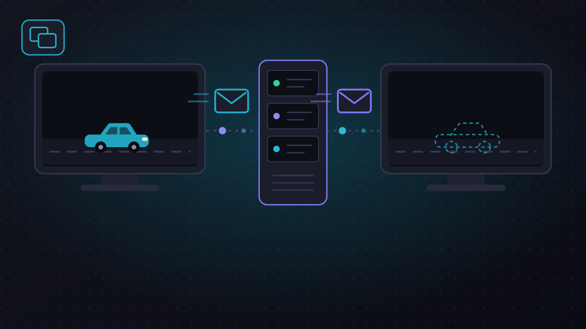
Lección 2.2El claxon y el tráfico
Tu primer RPC, de ida y vuelta, y la primera lógica que solo corre en el servidor. Termina con el tráfico visible solo para el anfitrión, a propósito.
Objetos en red
Hacer aparecer, desaparecer y emparentar objetos que todos ven.
Vídeo 01:20:20 – 02:01:20 En tu juego: Tráfico o carga como objetos de red.
 Lección 3.1
Lección 3.1
Objetos en red: aparecer, desaparecer, emparentar
Cómo se crea algo que todos ven, quién puede hacerlo, cómo se refiere una máquina a un objeto de otra, y por qué emparentar objetos de red tiene reglas propias.
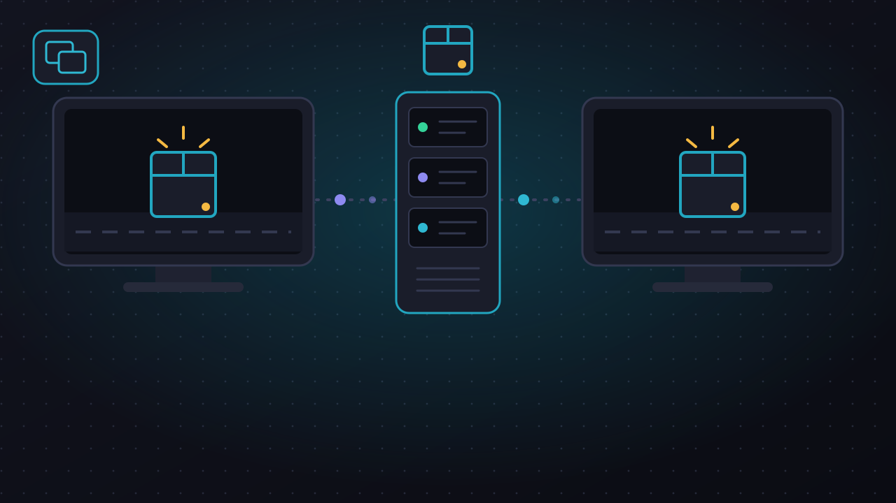
Lección 3.2Tráfico en red
Convertir los camiones en objetos de red para que el cliente vea el mismo tráfico que el anfitrión, con el servidor conduciéndolos.
Estado continuo
NetworkVariable frente a RPC, y colisiones entre jugadores.
Vídeo 02:01:20 – 02:45:04 En tu juego: La dirección de las ruedas (issue 16) y choques entre coches.
 Lección 4.1
Lección 4.1
Estado continuo: NetworkVariable frente a RPC
La segunda forma de cruzar la red: un valor compartido en vez de un aviso. Cuándo conviene cada una, y qué pasa cuando dos jugadores con autoridad propia chocan.
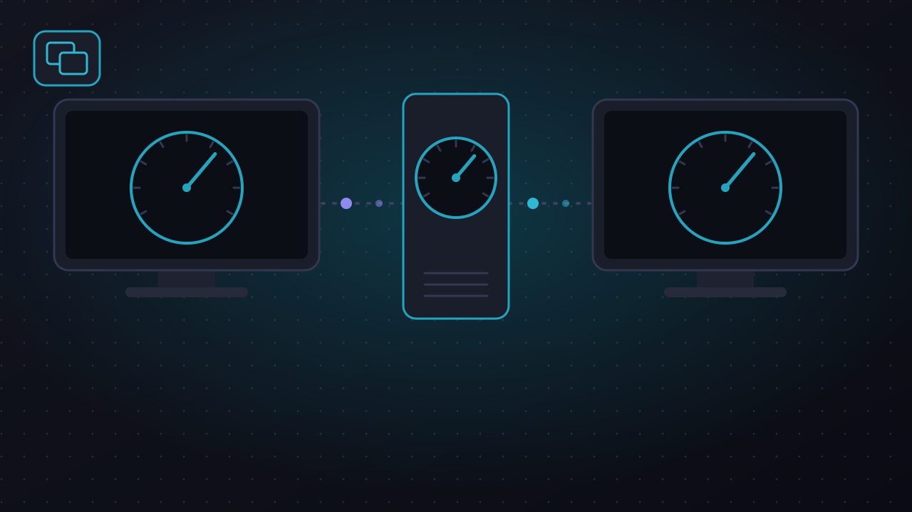
Lección 4.2El volante y los choques
Cerrar tu issue 16: las ruedas delanteras giran en todas las copias gracias a una NetworkVariable que escribe el dueño. Y un experimento con dos coches chocando.
Estado de partida y pausa
Una máquina de estados compartida y una pausa que respeta a todos.
Vídeo 02:45:04 – 03:11:16 En tu juego: Espera, cuenta atrás, carrera y fin.
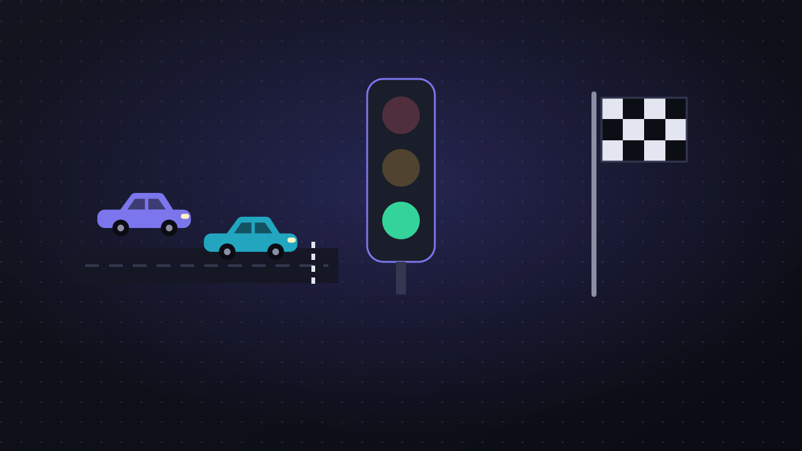
Lección 5.1Estado de partida y pausa
Una máquina de estados que comparten todos: esperar a que estén listos, cuenta atrás, jugar y terminar. Y qué significa pausar cuando hay más de un jugador.
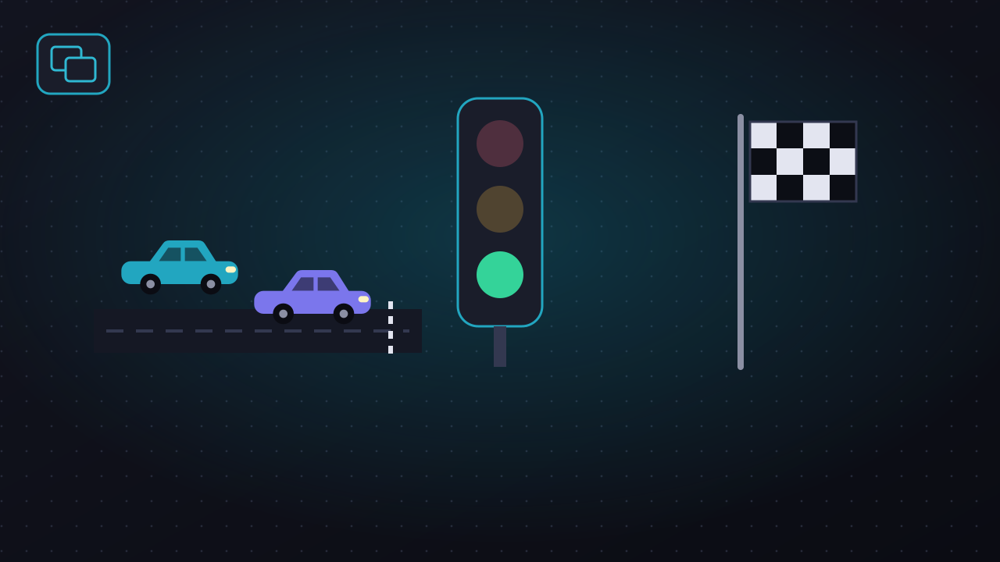
Lección 5.2La carrera
Darle una partida a tu juego: nadie arranca hasta que los dos estén listos, hay una cuenta atrás, se corre contra el reloj y se acaba para todos a la vez.
Desconexiones y entradas tardías
Qué pasa cuando alguien se cae o llega con la partida empezada.
Vídeo 03:11:16 – 03:29:44 En tu juego: Caída del anfitrión y límite de jugadores.
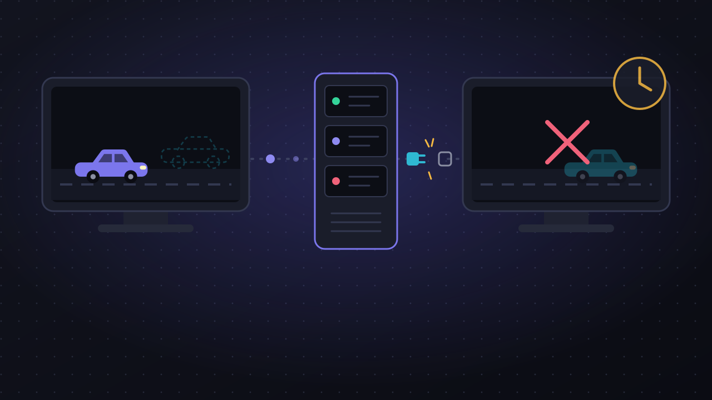
Lección 6.1Desconexiones y entradas tardías
Lo que distingue un prototipo de un juego: qué pasa cuando alguien se cae a mitad, cuando se cae el anfitrión, y cuando alguien intenta entrar con la partida empezada.
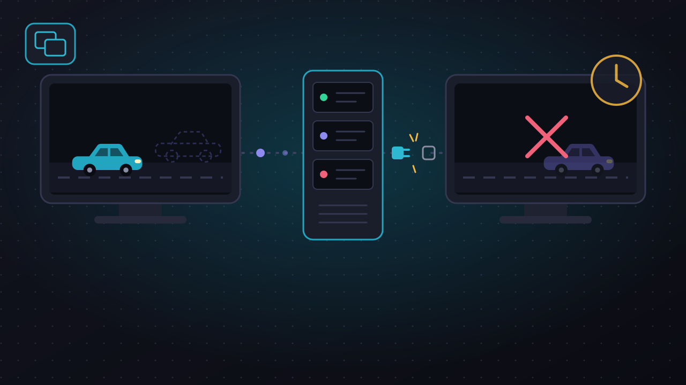
Lección 6.2Caídas y aforo
Provocar las tres situaciones incómodas en tu juego, mirar qué pasa de verdad, y decidir qué hace en cada una: se va un cliente, se va el anfitrión, y alguien llega tarde.
Flujo de escenas y selección
Cambiar de escena en red y elegir personaje antes de jugar.
Vídeo 03:29:44 – 04:37:34 En tu juego: Menú, selección de vehículo y juego.
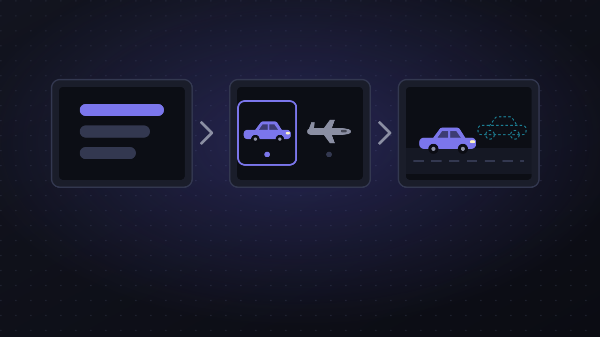
Lección 7.1Flujo de escenas y selección de personaje
Cómo se cambia de escena cuando hay varias máquinas, qué objetos sobreviven al cambio, y cómo se guarda una lista de jugadores con sus elecciones que todos ven.
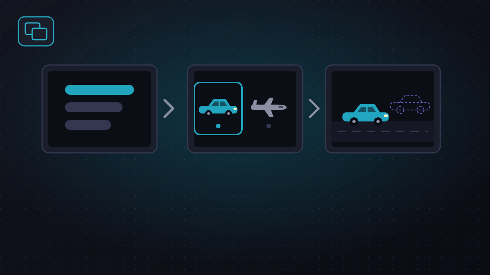
Lección 7.2Menú, selección de vehículo y juego
Partir tu única escena en tres, mover a todos los jugadores de una a otra, y dejar que cada uno elija con qué vehículo corre.
Jugar por internet
Encontrarse y conectarse fuera de la red local.
Vídeo 04:37:34 – 05:55:09 En tu juego: Sesiones con código a través de Relay.
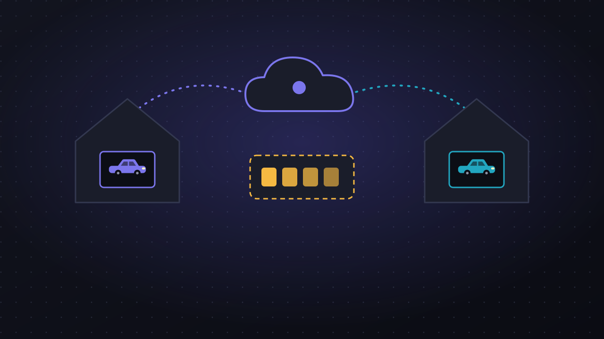
Lección 8.1Jugar por internet: encontrarse y conectarse
Dos problemas distintos que suelen confundirse: cómo descubre un jugador que existe una partida, y cómo llegan los datos de una casa a otra sin abrir puertos.
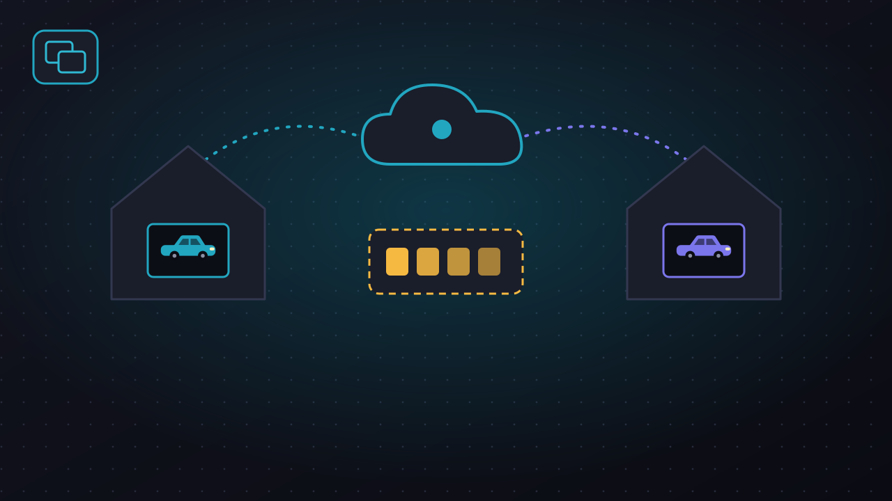
Lección 8.2Sesiones con código
Abrir la caja negra de los botones de sesión: crear y unirte a una partida con tu propio código, mostrar el código de acceso y jugar desde dos ordenadores de verdad.
Depurar y cerrar
Simular mala red, medir, y dejar la opción de un jugador.
Vídeo 05:55:09 – 06:20:02 En tu juego: Latencia simulada, opción de un jugador y checkpoint final.
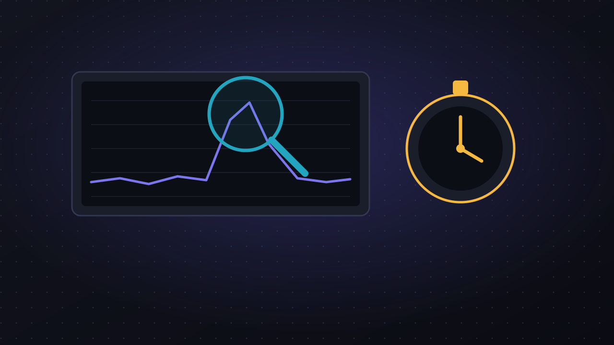
Lección 9.1Depurar y cerrar: mala red, medidas y un jugador
Tu juego funciona porque lo has probado en la mejor red posible: tu propio ordenador. Cómo estropearla a propósito, qué medir, y por qué conviene poder jugar sin red.
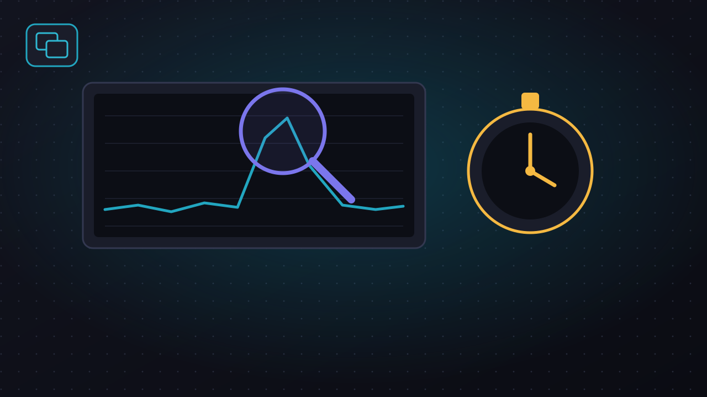
Lección 9.2Mala red y un jugador
El examen final de tu juego: ponerle una conexión mala, repetir los experimentos de todo el curso, medir lo que envía y dejarlo jugable sin red.